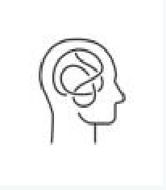

La Creatividad: La Magia de lo Original
¿Qué es la creatividad? Es esa habilidad mental maravillosa que nos permite responder a problemas o situaciones de la vida de una manera original, novedosa y diferente. En la educación infantil, la creatividad es esencial porque es una ventana a la singularidad, originalidad y libertad de pensamiento de cada niño.
Aunque antes se asociaba solo con el arte o la música, hoy sabemos que la creatividad es una capacidad que se puede y debe trabajar en todos los ámbitos. Es vital animar a los niños a expresar sus ideas, sentimientos y experiencias de forma personal y creativa.
La creatividad nos permite encontrar soluciones originales.
Características y Componentes de la Creatividad
Podemos identificar varios aspectos clave en el pensamiento creativo:
- Fluidez: La capacidad de generar muchas ideas o respuestas diferentes ante un problema o estímulo. "¡Se me ocurren mil cosas!"
-  Flexibilidad: La habilidad de abordar una situación desde distintos puntos de vista y adaptar nuestras ideas. Ver un ladrillo y pensar que puede ser una casa, un coche, un teléfono...
- Originalidad: La capacidad de producir respuestas que son nuevas, únicas y que, además, se adaptan a la realidad o al contexto.
- Elaboración: La capacidad de añadir detalles, desarrollar las ideas y hacerlas más complejas o completas.
Otras características que nos pueden indicar que un niño es creativo incluyen su tolerancia a la ambigüedad, su sensibilidad, un sano espíritu crítico, cómo valora sus propias creaciones y las de los demás, y su espontaneidad.
Cómo Estimular la Creatividad en Educación Infantil
El rol del educador es fundamental para cultivar la creatividad en los niños. Se trata de fomentar un tipo de pensamiento que busca múltiples soluciones (pensamiento divergente) y crear un ambiente donde la creatividad pueda florecer:
- Clima afectivo y respetuoso: Crear un espacio seguro donde el niño se sienta libre para expresarse sin miedo al juicio, donde se valore su sensibilidad y libertad, y donde todas las creaciones, por sencillas que parezcan, sean apreciadas.
- Propuestas abiertas: Ofrecer actividades que no tengan una única respuesta correcta, que permitan múltiples enfoques y que supongan un pequeño desafío personal para cada niño.
- Fomentar la participación: Incluir a los niños en algunas decisiones del aula, haciendo que colaboren y aporten sus ideas.
- Estimular los sentidos y la curiosidad: Ofrecer experiencias ricas que despierten la observación, la intuición y el deseo de explorar.
- Trabajar con la imaginación: Utilizar recursos como cuentos, historias inventadas, disfraces y el juego simbólico para potenciar su mundo interior.